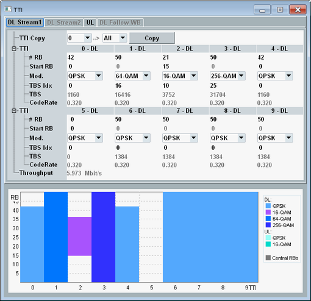

The DL stream tabs and the UL tab contain usually one column of settings for each subframe of a radio frame. For some transmission schemes, the DL stream tab contains only one column, applicable to all subframes.
For TDD, the UL tab presents only the UL subframes of a radio frame, while the DL tabs present both DL and special subframes. The special subframe settings configure the DwPTS field for data transfer in downlink direction. To modify the uplink-downlink configuration of the radio frame, see "Use Carrier Specific". For UL-DL configuration 0, all UL subframes have the same settings.
The subframe number (0 to 9) and the subframe type are indicated in the column header. All columns must be configured top down (first "# RB", then "Start RB", then ...).

If the selected scenario involves several downlink streams, some DL parameters can be configured individually per stream. Other parameters are configurable for stream 1 only and are applied automatically to stream 2. If you enable parameter "Equal" in the main view, all stream 1 settings are also applied to stream 2 and the stream 2 tab is disabled.
For carrier aggregation scenarios, you can configure the settings per component carrier.
All parameters of the tabs are explained in the following.
Allows you to copy the settings of a selected subframe to other subframes. The source and target subframes of the copy operation are identified via their number.
To perform a copy operation, select the number of the subframe to be copied, select the target subframes and press the "Copy" button.
Remote command:n/a
Selects a CQI definition table for "Fixed CQI". There is a table with 256-QAM and a table without 256-QAM, see "Fixed CQI Channels".
256-QAM requires option R&S CMW-KS504/-KS554.
Remote command:Select the number of allocated resource blocks and specifies the number of the first allocated resource block.
Selects the CQI index for a downlink subframe. Only for scheduling type "Fixed CQI".
Selects or displays the modulation type.
If you want to use UL 64-QAM, configure also "Enable 64-QAM UL Support".
Selects the transport block size index.
The allowed values depend on whether you select 256-QAM for at least one TTI or not, see "Supported Transport Block Size Indices".
The following commands configure the uplink parameters "#RB", "Start RB", "Mod." and "TBS Idx".
The settings apply to all scheduling types with TTI-based uplink configuration.
Remote command:For downlink configuration, there are different commands per scheduling type and for PCC and SCC.
The following commands configure the parameters "#RB", "Start RB", "Mod." and "TBS Idx" for the scheduling type "User-Defined TTI-Based".
Remote command:The following commands configure the parameters "#RB", "Start RB" and "CQI Idx" for the scheduling type "Fixed CQI".
Remote command:Displays the transport block size in bits.
Displays the effective channel code rate, i.e. the number of information bits (including CRC bits) divided by the number of physical channel bits on PDSCH/PUSCH.
Remote command:Displays the expected maximum throughput in Mbit/s (averaged over one frame). The value is calculated per downlink and uplink stream.
Remote command: